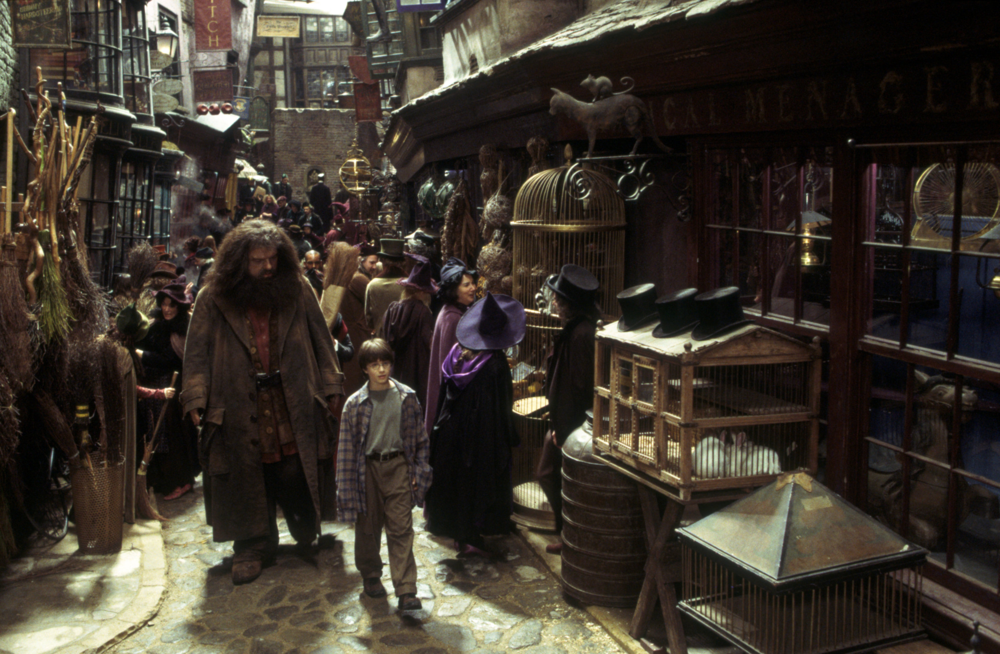

Harry Potter - Hidden gems and insights from a true fan
Magical locations
Magical locations
Hogwarts and Hogsmeade
Hogwarts School of Witchcraft and Wizardry, often shortened to Hogwarts, was a Scottish
wizarding
school located in the Scottish Highlands.
It accepted any magical student residing in the
islands of Great Britain and Ireland at the age of eleven years old at the start of the incoming
term for enrolment.It was a state-owned school, funded by the Ministry of Magic.
The castle's 142 staircases were known to change position. The castle was known for its many
updates
and changes in layout throughout the years.
It should be noted that some rooms in the school tended
to "move around", as did the steps on the Grand Staircase. Albus Dumbledore once noted that even
he
did not know all of Hogwarts' secrets.
The castle had been around for centuries, and consequently
had a long history of ancient magic.
Hogwarts' motto was: "Draco dormiens nunquam titillandus", translated as: Never tickle a
sleeping
dragon.
Hogwarts also had a Frog Choir which sang at special occasions.
There was an official school song, though it was only sung when the headmaster was in a
particularly
good mood and deemed it appropriate (which is therefore why it was only known to have been
commissioned once from 1991-1998).
It didn't seem to conform to the strict opinions of older
headmasters and headmistresses, such as Armando Dippet. There was no standard rhythm to the
song.
Hogsmeade Village, or simply called Hogsmeade, was the only all-wizarding village in Britain. It
was
founded by Hengist of Woodcroft.
The Shrieking Shack - An infamous and the most frightening building in Britain. The villagers
thought it was haunted,
but they didn't know it was actually the werewolf Remus Lupin making the scary noises (it was
where
he went to transform).
Godric's Hollow
Birthplace of Godric Gryffindor and Harry Potter.
James and Lily's bodies were laid to rest together in the Godric's Hollow graveyard. Their
tombstone
reads, "The last enemy that shall be destroyed is death."
Wizard residents of Godric's Hollow still had to avoid open use of magic to avoid disturbing the
Muggle residents of the village. This is why the monuments to the Potter family were hidden.
Bowman Wright, forged the first Golden Snitch there in the Middle Ages.
According to Harry Potter, after reading a gravestone it appears that some soldiers might have
lived
and died in Godric's Hollow as a the said gravestone reads "They gave their life so others might
live."
It was once believed that a church in Godric's Hollow named St Jerome's Church was actually
called
the Parish Church of St. Clementine. However, Harry Potter and the Cursed Child revealed its
true
name to be St Jerome.
Diagon Alley

Diagon Alley was a cobblestoned wizarding alley and shopping area located in London, England
behind
a pub called the Leaky Cauldron.
Inside the alley was an assortment of restaurants, shops, and other
sights. All items on the Hogwarts' supply list could be bought at Diagon Alley.
The alley was completely hidden from the Muggle world, which was right outside of its
boundaries.
It was very large in area and essentially the centre of wizarding London.Consequently, the
demand for space here was steep, and rent costed “loads of Galleons”.
Diagon Alley connected to a second, less reputable shopping district, Knockturn Alley. This
alley
was completely devoted to the Dark Arts and was considered disreputable and "dodgy" by the
wizarding
community at large.
A wizard seen visiting the alley was considered to be up to no good.
Hagrid helped Harry shop for his school supplies and purchased Harry's eleventh birthday
present,
the snowy owl Hedwig, from Eeylops Owl Emporium.
Harry later named her Hedwig, a name he found in A History of Magic.
The Alley consits of more than 31 shops. When visting the Warner Brother Studio in Leavesden,
UK,
you can walk thtough the Alley.
In the film adaptation of Harry Potter and the Philosopher's Stone, Hagrid taps a series of
bricks
to enter Diagon Alley instead of one brick (three up two across).
In order to fill all the Shops in Diagon Alley, set director Stephenie McMillan and her team
went to
antique shops, auctions and flea markets in the city and the countryside.
Crew members who went to purchase the items were asked not to say why they needed so many jars,
books, or owl cages.